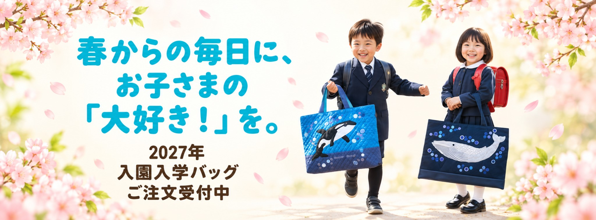

写真のバッグを
そのまま注文したい
掲載の色・基本サイズのままなら、事前相談は不要です。商品ページで必要なオプションを選び、ご購入ください。
バッグを選ぶ →レッスンバッグ・シューズバッグなどを掲載しています。

写真のままのご注文も、色・サイズのご相談も。
ご希望に合わせて、下の入口からお進みください。
掲載の色・基本サイズのままなら、事前相談は不要です。商品ページで必要なオプションを選び、ご購入ください。
バッグを選ぶ →レッスンバッグ・シューズバッグなどを掲載しています。
色の組み合わせはカタログでイメージできます。色変更・サイズ変更は、ご購入前にご相談ください。
カタログで色を選ぶ →制作の混み具合やご注文内容によって、発送までの日数が変わります。発送予定は、ご入金確認後にメッセージで個別にご案内します。
使いたい日が決まっている方は、ご購入前にご相談ください。「○月○日までに使いたい」とお知らせいただけると、確認がスムーズです。
使いたい日を相談する →最新の発送目安は、Instagramのハイライト「納期・受付状況」でもお知らせしています。Instagramを見る ↗
お急ぎの方は、ショップの「即発送できる子たち」もご覧ください。発送日数は各商品ページをご確認ください。
| お名前刺しゅう | ＋800円 商品ページのオプションからお選びください。 |
|---|---|
| サイズ変更 | ＋2,000円〜／ご購入前に相談 対応上限：縦35×横45×マチ10cm。園・学校の指定書があれば、写真を添えてご相談ください。 |
| おそろいシューズバッグ | ＋6,550円 対応商品のオプションから選べます。同時購入でシューズバッグ片側のお名前刺しゅうが無料です。 |
| 持ち手・開閉など | 机かけループや開閉方法なども選べます。 対応内容と追加料金は、各商品ページをご確認ください。 |
今年は第1期・第2期に分けず、順次ご注文を承ります。受付状況やお届け時期が気になる場合は、ご購入前にお問い合わせください。
はい。カタログでバッグの色と生き物を組み合わせて、完成イメージを楽しめます。画面はイメージのため、実物と色合いや質感が異なる場合があります。ご希望の画面をスクリーンショットして、ご相談時にお送りください。
基本サイズは縦30×横40×マチ4cm、持ち手は約32cmです。素材や仕様は商品によって異なるため、各商品ページをご確認ください。
生地の性質上、縮みや型崩れが起きる場合があります。汚れた部分をやさしく手洗いするなど、各商品ページのお手入れ方法に沿ってお使いください。
親子でゆっくり、選んでくださいね。
マキナツショップへ →